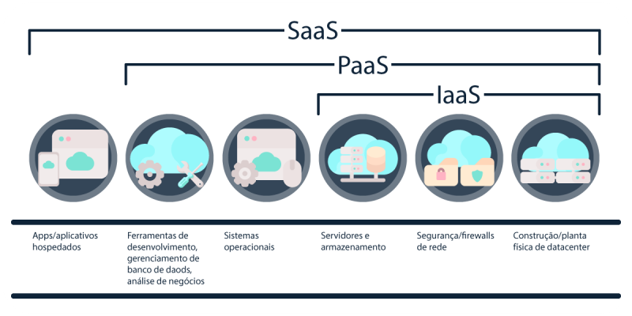

Computação em Nuvem
O que é a Computação na Nuvem?
É um termo coloquial para a disponibilidade sob demanda de recursos do sistema de computador, especialmente armazenamento de dados e capacidade de computação, sem o gerenciamento ativo direto do utilizador. O termo geralmente é usado para descrever centros de dados disponíveis para muitos utilizadores pela Internet. Nuvens em grande escala, predominantes hoje em dia, geralmente têm funções distribuídas em vários locais dos servidores centrais. Se a conexão com o utilizador for relativamente próxima, pode ser designado um servidor de borda.
Quais as características da computação em Nuvem?
- Autosserviço sob demanda: O cliente pode pessoalmente configurar recursos computacionais necessários, como servidores e redes de armazenamento, de maneira automática, sem precisar depender do fornecedor de serviços em nuvem.
- Amplo acesso pela internet: Os recursos computacionais estarão disponíveis através da internet podendo ser livremente acessado por diferentes dispositivos (ex.: smartphones, tablets, laptops, estações de trabalho), independente de seu fabricante.
- Rápida Elasticidade: As capacidades dos recursos poder ser facilmente aumentados ou diminuídos de acordo com a demanda e perfil de uso das aplicações. Essas alterações podem ser realizadas a qualquer momento, possibilitando melhor utilização e, portanto, menor custo.
- Serviço mensurado: Os sistemas em nuvem controlam e aperfeiçoam a utilização de recursos automaticamente, considerando capacidades de monitoramento apropriado para cada serviço (ex.: armazenamento, processamento, largura de banda, e usuários ativos por contas.). O uso dos recursos pode ser auditado, permitindo transparência para o fornecedor e para o cliente.
- Pool de recursos: Os recursos do fornecedor de serviços em nuvem são disponibilizados para servir a diferentes categorias de clientes usando um modelo exclusivo (single-tenant) ou compartilhado (multi-tenant), conforme necessidade, sejam recursos físicos ou virtuais (ex.: armazenamento, processamento, memória, e largura de banda de rede)..
Quais as modalidades de serviços?
Os serviços de computação em nuvem são divididos em três tipos:
- Infraestrutura como Serviço (IaaS): Fornece recursos de infraestrutura virtualizados, como máquinas virtuais e armazenamento.
Exemplos: Amazon EC2, Google Compute Engine, Microsoft Azure VMs. - Plataforma como Serviço (PaaS): Oferece uma plataforma completa para desenvolvimento e gerenciamento de aplicações.
Exemplos: Google App Engine, Microsoft Azure App Service, Heroku. - Software como Serviço (SaaS): Proporciona acesso a software e aplicações pela internet.
Exemplos: Google Workspace, Microsoft 365, Salesforce.
Quais os tipos de nuvem?
- Nuvem Pública: Serviços de nuvem oferecidos ao público em geral, com infraestrutura gerenciada por provedores de terceiros. Exemplos incluem AWS, Azure, e Google Cloud.
- Nuvem Privada: Infraestrutura de nuvem exclusiva para uma única organização, oferecendo maior controle e personalização.
- Nuvem Comunitária: A infraestrutura é compartilhada por várias instituições que partilham interesses e recursos comuns. Pode ser administrada pelas próprias organizações ou por um terceiro, podendo existir dentro do ambiente da instituição ou fora dele.
- Nuvem Híbrida: Composta de duas ou mais nuvens, sejam elas privadas, públicas ou comunitárias. Essas permanecem como entidades únicas, mas estão unidas pela tecnologia padronizada ou proprietária que permite a portabilidade de dados e aplicações.
Provedores de Cloud:
AWS (Amazon Web Services):
A AWS, lançada pela Amazon em 2006, é frequentemente considerada a pioneira e líder no mercado de serviços em nuvem. Ela oferece uma ampla gama de serviços, desde armazenamento simples até recursos avançados de aprendizado de máquina. Sua extensa rede global de data centers permite alcançar uma latência mínima em todo o mundo.
Vantagens da AWS:
Microsoft Azure:
O Microsoft Azure entrou no mercado em 2010 e rapidamente se tornou um concorrente sólido. A vantagem da Microsoft reside em sua integração com produtos amplamente utilizados, como o Windows Server e o Office 365.
Vantagens do Microsoft Azure:
.png)
Google Cloud:
O Google Cloud entrou na competição em 2011, trazendo a experiência do Google em infraestrutura de escala web. Conhecido por seus serviços de big data, análise e aprendizado de máquina, o Google Cloud oferece uma plataforma robusta para desenvolvimento, armazenamento e computação.